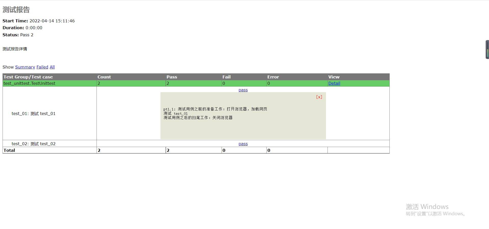

datetime:2022/04/12 17:48
author:nzb
单元测试：unittest 框架进阶
一、测试夹具（固件、钩子函数、前后置）TestFixtrue详解
setUp/tearDown：在测试用例之前和之后执行setUpClass/tearDownClass：在测试用例类之前和之后执行（必须加@classmethod的装饰器）setUpModule/teardownModule：在测试模块之前和之后执行
__date__ = "2022/4/12 15:18"
import unittest
class TestUnittest(unittest.TestCase):
@classmethod
def setUpClass(cls) -> None:
print("测试类之前的准备工作：连接数据库，创建日志对象等")
@classmethod
def tearDownClass(cls) -> None:
print("测试类之后的扫尾工作：销毁数据库连接，销毁日志对象等")
def setUp(self) -> None:
print("测试用例之前的准备工作：打开浏览器，加载网页")
def tearDown(self) -> None:
print("测试用例之后的扫尾工作：关闭浏览器")
def test_01(self):
print("测试 test_01")
def test_02(self):
print("测试 test_02")
# self.assertEqual(1, 2)
if __name__ == '__main__':
print("___________________________main___________________________")
suite = unittest.defaultTestLoader.discover('.', pattern="test_unittest.py")
unittest.main(defaultTest='suite')
C:\Users\lenovo\PycharmProjects\demo\venv\Scripts\python.exe C:/Users/lenovo/PycharmProjects/demo/study/unittest_demo/test_unittest.py
..
----------------------------------------------------------------------
Ran 2 tests in 0.000s
OK
___________________________main___________________________
测试类之前的准备工作：连接数据库，创建日志对象等
测试用例之前的准备工作：打开浏览器，加载网页
测试 test_01
测试用例之后的扫尾工作：关闭浏览器
测试用例之前的准备工作：打开浏览器，加载网页
测试 test_02
测试用例之后的扫尾工作：关闭浏览器
测试类之后的扫尾工作：销毁数据库连接，销毁日志对象等
Process finished with exit code 0
- 夹具封装 自动化测试框架必备的思想
二、忽略测试用例
import unittest
class TestUnittest(unittest.TestCase):
a = 18
@unittest.skip("无条件忽略")
def test_04(self):
print("测试 test_04")
@unittest.skipIf(a >= 15, "条件为 True 忽略")
def test_05(self):
print("测试 test_05")
@unittest.skipUnless(a >= 20, "条件为 False 忽略")
def test_06(self):
print("测试 test_06")
三、断言(判断我们用例是否执行成功)
| 方法 | 检查对象 | 引入版本 |
|---|---|---|
| assertEqual(a, b) | a == b | |
| assertEqual(a, b) | a != b | |
| assertTrue(x) | bool(x) is True | |
| assertFalse(x) | bool(x) is False | |
| assertIs(a, b) | a is b | 3.1 |
| assertIsNot(a, b) | a is not b | 3.1 |
| assertIsNone(x) | x is None | 3.1 |
| assertIsNotNone(x) | x is not None | 3.1 |
| assertIn(a, b) | a in b | 3.1 |
| assertNotIn(a, b) | a not in b | 3.1 |
| assertIsInstance(a, b) | isinstance(a, b) | 3.2 |
| assertNotIsInstance(a, b) | not isinstance(a, b) | 3.2 |
- 常用
- assertEqual(a, b)
- assertTrue(x)
- assertIn(a, b)
四、批量生产自动化的测试报告
txt 文本格式的测试报告
html格式的测试报告
- 第一步：下载一个 HTMLTestRunner.py (官方上的不行，仅支持py2.7)
"""
A TestRunner for use with the Python unit testing framework. It
generates a HTML report to show the result at a glance.
The simplest way to use this is to invoke its main method. E.g.
import unittest
import HTMLTestRunner
... define your tests ...
if __name__ == '__main__':
HTMLTestRunner.main()
For more customization options, instantiates a HTMLTestRunner object.
HTMLTestRunner is a counterpart to unittest's TextTestRunner. E.g.
# output to a file
fp = file('my_report.html', 'wb')
runner = HTMLTestRunner.HTMLTestRunner(
stream=fp,
title='My unit test',
description='This demonstrates the report output by HTMLTestRunner.'
)
# Use an external stylesheet.
# See the Template_mixin class for more customizable options
runner.STYLESHEET_TMPL = '<link rel="stylesheet" href="my_stylesheet.css" type="text/css">'
# run the test
runner.run(my_test_suite)
------------------------------------------------------------------------
Copyright (c) 2004-2007, Wai Yip Tung
All rights reserved.
Redistribution and use in source and binary forms, with or without
modification, are permitted provided that the following conditions are
met:
* Redistributions of source code must retain the above copyright notice,
this list of conditions and the following disclaimer.
* Redistributions in binary form must reproduce the above copyright
notice, this list of conditions and the following disclaimer in the
documentation and/or other materials provided with the distribution.
* Neither the name Wai Yip Tung nor the names of its contributors may be
used to endorse or promote products derived from this software without
specific prior written permission.
THIS SOFTWARE IS PROVIDED BY THE COPYRIGHT HOLDERS AND CONTRIBUTORS "AS
IS" AND ANY EXPRESS OR IMPLIED WARRANTIES, INCLUDING, BUT NOT LIMITED
TO, THE IMPLIED WARRANTIES OF MERCHANTABILITY AND FITNESS FOR A
PARTICULAR PURPOSE ARE DISCLAIMED. IN NO EVENT SHALL THE COPYRIGHT OWNER
OR CONTRIBUTORS BE LIABLE FOR ANY DIRECT, INDIRECT, INCIDENTAL, SPECIAL,
EXEMPLARY, OR CONSEQUENTIAL DAMAGES (INCLUDING, BUT NOT LIMITED TO,
PROCUREMENT OF SUBSTITUTE GOODS OR SERVICES; LOSS OF USE, DATA, OR
PROFITS; OR BUSINESS INTERRUPTION) HOWEVER CAUSED AND ON ANY THEORY OF
LIABILITY, WHETHER IN CONTRACT, STRICT LIABILITY, OR TORT (INCLUDING
NEGLIGENCE OR OTHERWISE) ARISING IN ANY WAY OUT OF THE USE OF THIS
SOFTWARE, EVEN IF ADVISED OF THE POSSIBILITY OF SUCH DAMAGE.
"""
# URL: http://tungwaiyip.info/software/HTMLTestRunner.html
__author__ = "Wai Yip Tung"
__version__ = "0.8.2"
"""
Change History
Version 0.8.2
* Show output inline instead of popup window (Viorel Lupu).
Version in 0.8.1
* Validated XHTML (Wolfgang Borgert).
* Added description of test classes and test cases.
Version in 0.8.0
* Define Template_mixin class for customization.
* Workaround a IE 6 bug that it does not treat <script> block as CDATA.
Version in 0.7.1
* Back port to Python 2.3 (Frank Horowitz).
* Fix missing scroll bars in detail log (Podi).
"""
# TODO: color stderr
# TODO: simplify javascript using ,ore than 1 class in the class attribute?
import datetime
import io
import sys
import time
import unittest
from xml.sax import saxutils
# ------------------------------------------------------------------------
# The redirectors below are used to capture output during testing. Output
# sent to sys.stdout and sys.stderr are automatically captured. However
# in some cases sys.stdout is already cached before HTMLTestRunner is
# invoked (e.g. calling logging.basicConfig). In order to capture those
# output, use the redirectors for the cached stream.
#
# e.g.
# >>> logging.basicConfig(stream=HTMLTestRunner.stdout_redirector)
# >>>
class OutputRedirector(object):
""" Wrapper to redirect stdout or stderr """
def __init__(self, fp):
self.fp = fp
def write(self, s):
self.fp.write(bytes(s, 'UTF-8'))
def writelines(self, lines):
self.fp.writelines(lines)
def flush(self):
self.fp.flush()
stdout_redirector = OutputRedirector(sys.stdout)
stderr_redirector = OutputRedirector(sys.stderr)
# ----------------------------------------------------------------------
# Template
class Template_mixin(object):
"""
Define a HTML template for report customerization and generation.
Overall structure of an HTML report
HTML
+------------------------+
|<html> |
| <head> |
| |
| STYLESHEET |
| +----------------+ |
| | | |
| +----------------+ |
| |
| </head> |
| |
| <body> |
| |
| HEADING |
| +----------------+ |
| | | |
| +----------------+ |
| |
| REPORT |
| +----------------+ |
| | | |
| +----------------+ |
| |
| ENDING |
| +----------------+ |
| | | |
| +----------------+ |
| |
| </body> |
|</html> |
+------------------------+
"""
STATUS = {
0: 'pass',
1: 'fail',
2: 'error',
}
DEFAULT_TITLE = 'Unit Test Report'
DEFAULT_DESCRIPTION = ''
# ------------------------------------------------------------------------
# HTML Template
HTML_TMPL = r"""<?xml version="1.0" encoding="UTF-8"?>
<!DOCTYPE html PUBLIC "-//W3C//DTD XHTML 1.0 Strict//EN" "http://www.w3.org/TR/xhtml1/DTD/xhtml1-strict.dtd">
<html xmlns="http://www.w3.org/1999/xhtml">
<head>
<title>%(title)s</title>
<meta name="generator" content="%(generator)s"/>
<meta http-equiv="Content-Type" content="text/html; charset=UTF-8"/>
%(stylesheet)s
</head>
<body>
<script language="javascript" type="text/javascript"><!--
output_list = Array();
/* level - 0:Summary; 1:Failed; 2:All */
function showCase(level) {
trs = document.getElementsByTagName("tr");
for (var i = 0; i < trs.length; i++) {
tr = trs[i];
id = tr.id;
if (id.substr(0,2) == 'ft') {
if (level < 1) {
tr.className = 'hiddenRow';
}
else {
tr.className = '';
}
}
if (id.substr(0,2) == 'pt') {
if (level > 1) {
tr.className = '';
}
else {
tr.className = 'hiddenRow';
}
}
}
}
function showClassDetail(cid, count) {
var id_list = Array(count);
var toHide = 1;
for (var i = 0; i < count; i++) {
tid0 = 't' + cid.substr(1) + '.' + (i+1);
tid = 'f' + tid0;
tr = document.getElementById(tid);
if (!tr) {
tid = 'p' + tid0;
tr = document.getElementById(tid);
}
id_list[i] = tid;
if (tr.className) {
toHide = 0;
}
}
for (var i = 0; i < count; i++) {
tid = id_list[i];
if (toHide) {
document.getElementById('div_'+tid).style.display = 'none'
document.getElementById(tid).className = 'hiddenRow';
}
else {
document.getElementById(tid).className = '';
}
}
}
function showTestDetail(div_id){
var details_div = document.getElementById(div_id)
var displayState = details_div.style.display
// alert(displayState)
if (displayState != 'block' ) {
displayState = 'block'
details_div.style.display = 'block'
}
else {
details_div.style.display = 'none'
}
}
function html_escape(s) {
s = s.replace(/&/g,'&');
s = s.replace(/</g,'<');
s = s.replace(/>/g,'>');
return s;
}
/* obsoleted by detail in <div>
function showOutput(id, name) {
var w = window.open("", //url
name,
"resizable,scrollbars,status,width=800,height=450");
d = w.document;
d.write("<pre>");
d.write(html_escape(output_list[id]));
d.write("\n");
d.write("<a href='javascript:window.close()'>close</a>\n");
d.write("</pre>\n");
d.close();
}
*/
--></script>
%(heading)s
%(report)s
%(ending)s
</body>
</html>
"""
# variables: (title, generator, stylesheet, heading, report, ending)
# ------------------------------------------------------------------------
# Stylesheet
#
# alternatively use a <link> for external style sheet, e.g.
# <link rel="stylesheet" href="$url" type="text/css">
STYLESHEET_TMPL = """
<style type="text/css" media="screen">
body { font-family: verdana, arial, helvetica, sans-serif; font-size: 80%; }
table { font-size: 100%; }
pre { }
/* -- heading ---------------------------------------------------------------------- */
h1 {
font-size: 16pt;
color: gray;
}
.heading {
margin-top: 0ex;
margin-bottom: 1ex;
}
.heading .attribute {
margin-top: 1ex;
margin-bottom: 0;
}
.heading .description {
margin-top: 4ex;
margin-bottom: 6ex;
}
/* -- css div popup ------------------------------------------------------------------------ */
a.popup_link {
}
a.popup_link:hover {
color: red;
}
.popup_window {
display: none;
position: relative;
left: 0px;
top: 0px;
/*border: solid #627173 1px; */
padding: 10px;
background-color: #E6E6D6;
font-family: "Lucida Console", "Courier New", Courier, monospace;
text-align: left;
font-size: 8pt;
width: 500px;
}
}
/* -- report ------------------------------------------------------------------------ */
#show_detail_line {
margin-top: 3ex;
margin-bottom: 1ex;
}
#result_table {
width: 80%;
border-collapse: collapse;
border: 1px solid #777;
}
#header_row {
font-weight: bold;
color: white;
background-color: #777;
}
#result_table td {
border: 1px solid #777;
padding: 2px;
}
#total_row { font-weight: bold; }
.passClass { background-color: #6c6; }
.failClass { background-color: #c60; }
.errorClass { background-color: #c00; }
.passCase { color: #6c6; }
.failCase { color: #c60; font-weight: bold; }
.errorCase { color: #c00; font-weight: bold; }
.hiddenRow { display: none; }
.testcase { margin-left: 2em; }
/* -- ending ---------------------------------------------------------------------- */
#ending {
}
</style>
"""
# ------------------------------------------------------------------------
# Heading
#
HEADING_TMPL = """<div class='heading'>
<h1>%(title)s</h1>
%(parameters)s
<p class='description'>%(description)s</p>
</div>
""" # variables: (title, parameters, description)
HEADING_ATTRIBUTE_TMPL = """<p class='attribute'><strong>%(name)s:</strong> %(value)s</p>
""" # variables: (name, value)
# ------------------------------------------------------------------------
# Report
#
REPORT_TMPL = """
<p id='show_detail_line'>Show
<a href='javascript:showCase(0)'>Summary</a>
<a href='javascript:showCase(1)'>Failed</a>
<a href='javascript:showCase(2)'>All</a>
</p>
<table id='result_table'>
<colgroup>
<col align='left' />
<col align='right' />
<col align='right' />
<col align='right' />
<col align='right' />
<col align='right' />
</colgroup>
<tr id='header_row'>
<td>Test Group/Test case</td>
<td>Count</td>
<td>Pass</td>
<td>Fail</td>
<td>Error</td>
<td>View</td>
</tr>
%(test_list)s
<tr id='total_row'>
<td>Total</td>
<td>%(count)s</td>
<td>%(Pass)s</td>
<td>%(fail)s</td>
<td>%(error)s</td>
<td> </td>
</tr>
</table>
""" # variables: (test_list, count, Pass, fail, error)
REPORT_CLASS_TMPL = r"""
<tr class='%(style)s'>
<td>%(desc)s</td>
<td>%(count)s</td>
<td>%(Pass)s</td>
<td>%(fail)s</td>
<td>%(error)s</td>
<td><a href="javascript:showClassDetail('%(cid)s',%(count)s)">Detail</a></td>
</tr>
""" # variables: (style, desc, count, Pass, fail, error, cid)
REPORT_TEST_WITH_OUTPUT_TMPL = r"""
<tr id='%(tid)s' class='%(Class)s'>
<td class='%(style)s'><div class='testcase'>%(desc)s</div></td>
<td colspan='5' align='center'>
<!--css div popup start-->
<a class="popup_link" onfocus='this.blur();' href="javascript:showTestDetail('div_%(tid)s')" >
%(status)s</a>
<div id='div_%(tid)s' class="popup_window">
<div style='text-align: right; color:red;cursor:pointer'>
<a onfocus='this.blur();' onclick="document.getElementById('div_%(tid)s').style.display = 'none' " >
[x]</a>
</div>
<pre>
%(script)s
</pre>
</div>
<!--css div popup end-->
</td>
</tr>
""" # variables: (tid, Class, style, desc, status)
REPORT_TEST_NO_OUTPUT_TMPL = r"""
<tr id='%(tid)s' class='%(Class)s'>
<td class='%(style)s'><div class='testcase'>%(desc)s</div></td>
<td colspan='5' align='center'>%(status)s</td>
</tr>
""" # variables: (tid, Class, style, desc, status)
REPORT_TEST_OUTPUT_TMPL = r"""
%(id)s: %(output)s
""" # variables: (id, output)
# ------------------------------------------------------------------------
# ENDING
#
ENDING_TMPL = """<div id='ending'> </div>"""
# -------------------- The end of the Template class -------------------
TestResult = unittest.TestResult
class _TestResult(TestResult):
# note: _TestResult is a pure representation of results.
# It lacks the output and reporting ability compares to unittest._TextTestResult.
def __init__(self, verbosity=1):
TestResult.__init__(self)
self.stdout0 = None
self.stderr0 = None
self.success_count = 0
self.failure_count = 0
self.error_count = 0
self.verbosity = verbosity
# result is a list of result in 4 tuple
# (
# result code (0: success; 1: fail; 2: error),
# TestCase object,
# Test output (byte string),
# stack trace,
# )
self.result = []
def startTest(self, test):
TestResult.startTest(self, test)
# just one buffer for both stdout and stderr
self.outputBuffer = io.BytesIO()
stdout_redirector.fp = self.outputBuffer
stderr_redirector.fp = self.outputBuffer
self.stdout0 = sys.stdout
self.stderr0 = sys.stderr
sys.stdout = stdout_redirector
sys.stderr = stderr_redirector
def complete_output(self):
"""
Disconnect output redirection and return buffer.
Safe to call multiple times.
"""
if self.stdout0:
sys.stdout = self.stdout0
sys.stderr = self.stderr0
self.stdout0 = None
self.stderr0 = None
return self.outputBuffer.getvalue()
def stopTest(self, test):
# Usually one of addSuccess, addError or addFailure would have been called.
# But there are some path in unittest that would bypass this.
# We must disconnect stdout in stopTest(), which is guaranteed to be called.
self.complete_output()
def addSuccess(self, test):
self.success_count += 1
TestResult.addSuccess(self, test)
output = self.complete_output()
self.result.append((0, test, output, ''))
if self.verbosity > 1:
sys.stderr.write('ok ')
sys.stderr.write(str(test))
sys.stderr.write('\n')
else:
sys.stderr.write('.')
def addError(self, test, err):
self.error_count += 1
TestResult.addError(self, test, err)
_, _exc_str = self.errors[-1]
output = self.complete_output()
self.result.append((2, test, output, _exc_str))
if self.verbosity > 1:
sys.stderr.write('E ')
sys.stderr.write(str(test))
sys.stderr.write('\n')
else:
sys.stderr.write('E')
def addFailure(self, test, err):
self.failure_count += 1
TestResult.addFailure(self, test, err)
_, _exc_str = self.failures[-1]
output = self.complete_output()
self.result.append((1, test, output, _exc_str))
if self.verbosity > 1:
sys.stderr.write('F ')
sys.stderr.write(str(test))
sys.stderr.write('\n')
else:
sys.stderr.write('F')
class HTMLTestRunner(Template_mixin):
"""
"""
def __init__(self, stream=sys.stdout, verbosity=1, title=None, description=None):
self.stream = stream
self.verbosity = verbosity
if title is None:
self.title = self.DEFAULT_TITLE
else:
self.title = title
if description is None:
self.description = self.DEFAULT_DESCRIPTION
else:
self.description = description
self.startTime = datetime.datetime.now()
def run(self, test):
"Run the given test case or test suite."
result = _TestResult(self.verbosity)
test(result)
self.stopTime = datetime.datetime.now()
self.generateReport(test, result)
print('\nTime Elapsed: %s' % (self.stopTime - self.startTime), file=sys.stderr)
return result
def sortResult(self, result_list):
# unittest does not seems to run in any particular order.
# Here at least we want to group them together by class.
rmap = {}
classes = []
for n, t, o, e in result_list:
cls = t.__class__
if not cls in rmap:
rmap[cls] = []
classes.append(cls)
rmap[cls].append((n, t, o, e))
r = [(cls, rmap[cls]) for cls in classes]
return r
def getReportAttributes(self, result):
"""
Return report attributes as a list of (name, value).
Override this to add custom attributes.
"""
startTime = str(self.startTime)[:19]
duration = str(self.stopTime - self.startTime)
status = []
if result.success_count: status.append('Pass %s' % result.success_count)
if result.failure_count: status.append('Failure %s' % result.failure_count)
if result.error_count: status.append('Error %s' % result.error_count)
if status:
status = ' '.join(status)
else:
status = 'none'
return [
('Start Time', startTime),
('Duration', duration),
('Status', status),
]
def generateReport(self, test, result):
report_attrs = self.getReportAttributes(result)
generator = 'HTMLTestRunner %s' % __version__
stylesheet = self._generate_stylesheet()
heading = self._generate_heading(report_attrs)
report = self._generate_report(result)
ending = self._generate_ending()
output = self.HTML_TMPL % dict(
title=saxutils.escape(self.title),
generator=generator,
stylesheet=stylesheet,
heading=heading,
report=report,
ending=ending,
)
self.stream.write(output.encode('utf8'))
def _generate_stylesheet(self):
return self.STYLESHEET_TMPL
def _generate_heading(self, report_attrs):
a_lines = []
for name, value in report_attrs:
line = self.HEADING_ATTRIBUTE_TMPL % dict(
name=saxutils.escape(name),
value=saxutils.escape(value),
)
a_lines.append(line)
heading = self.HEADING_TMPL % dict(
title=saxutils.escape(self.title),
parameters=''.join(a_lines),
description=saxutils.escape(self.description),
)
return heading
def _generate_report(self, result):
rows = []
sortedResult = self.sortResult(result.result)
for cid, (cls, cls_results) in enumerate(sortedResult):
# subtotal for a class
np = nf = ne = 0
for n, t, o, e in cls_results:
if n == 0:
np += 1
elif n == 1:
nf += 1
else:
ne += 1
# format class description
if cls.__module__ == "__main__":
name = cls.__name__
else:
name = "%s.%s" % (cls.__module__, cls.__name__)
doc = cls.__doc__ and cls.__doc__.split("\n")[0] or ""
desc = doc and '%s: %s' % (name, doc) or name
row = self.REPORT_CLASS_TMPL % dict(
style=ne > 0 and 'errorClass' or nf > 0 and 'failClass' or 'passClass',
desc=desc,
count=np + nf + ne,
Pass=np,
fail=nf,
error=ne,
cid='c%s' % (cid + 1),
)
rows.append(row)
for tid, (n, t, o, e) in enumerate(cls_results):
self._generate_report_test(rows, cid, tid, n, t, o, e)
report = self.REPORT_TMPL % dict(
test_list=''.join(rows),
count=str(result.success_count + result.failure_count + result.error_count),
Pass=str(result.success_count),
fail=str(result.failure_count),
error=str(result.error_count),
)
return report
def _generate_report_test(self, rows, cid, tid, n, t, o, e):
# e.g. 'pt1.1', 'ft1.1', etc
has_output = bool(o or e)
tid = (n == 0 and 'p' or 'f') + 't%s.%s' % (cid + 1, tid + 1)
name = t.id().split('.')[-1]
doc = t.shortDescription() or ""
desc = doc and ('%s: %s' % (name, doc)) or name
tmpl = has_output and self.REPORT_TEST_WITH_OUTPUT_TMPL or self.REPORT_TEST_NO_OUTPUT_TMPL
# o and e should be byte string because they are collected from stdout and stderr?
if isinstance(o, str):
# TODO: some problem with 'string_escape': it escape \n and mess up formating
# uo = unicode(o.encode('string_escape'))
uo = o
else:
uo = o.decode('utf-8')
if isinstance(e, str):
# TODO: some problem with 'string_escape': it escape \n and mess up formating
# ue = unicode(e.encode('string_escape'))
ue = e
else:
ue = e.decode('utf-8')
script = self.REPORT_TEST_OUTPUT_TMPL % dict(
id=tid,
output=saxutils.escape(uo + ue),
)
row = tmpl % dict(
tid=tid,
Class=(n == 0 and 'hiddenRow' or 'none'),
style=n == 2 and 'errorCase' or (n == 1 and 'failCase' or 'none'),
desc=desc,
script=script,
status=self.STATUS[n],
)
rows.append(row)
if not has_output:
return
def _generate_ending(self):
return self.ENDING_TMPL
##############################################################################
# Facilities for running tests from the command line
##############################################################################
# Note: Reuse unittest.TestProgram to launch test. In the future we may
# build our own launcher to support more specific command line
# parameters like test title, CSS, etc.
class TestProgram(unittest.TestProgram):
"""
A variation of the unittest.TestProgram. Please refer to the base
class for command line parameters.
"""
def runTests(self):
# Pick HTMLTestRunner as the default test runner.
# base class's testRunner parameter is not useful because it means
# we have to instantiate HTMLTestRunner before we know self.verbosity.
if self.testRunner is None:
self.testRunner = HTMLTestRunner(verbosity=self.verbosity)
unittest.TestProgram.runTests(self)
main = TestProgram
##############################################################################
# Executing this module from the command line
##############################################################################
if __name__ == "__main__":
main(module=None)
```python
import datetime
import unittest
from unittest_demo.HTMLTestRunner import HTMLTestRunner
if __name__ == '__main__':
suite = unittest.defaultTestLoader.discover('.', pattern="test_unittest.py")
time_str = datetime.datetime.now().strftime('%Y%m%d%H%M%S')
with open(f"./report_{time_str}.html", 'wb') as f:
runner = HTMLTestRunner(f, title="测试报告", description="测试报告详情")
runner.run(suite)
```

测试报告中的测试用例的中文说明是测试用例函数的注释